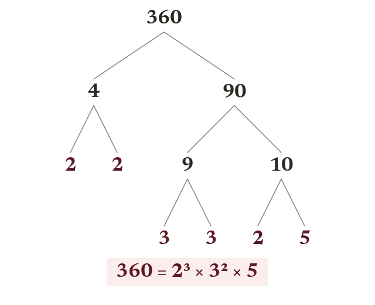

Prime factor decomposition
Every number above is prime or a unique product of primes. A factor tree splits until every branch is prime. Keep splitting a :
Every whole number greater than is either prime, or can be written as a product of primes in exactly one way (the Fundamental Theorem of Arithmetic). A factor tree finds this decomposition by splitting the number into a factor pair, then splitting each factor again, until every branch ends in a prime - a number whose only factors are and itself. Check each end branch is actually prime; don't stop at a number just because it looks small, e.g. not prime, so a branch of must keep splitting.